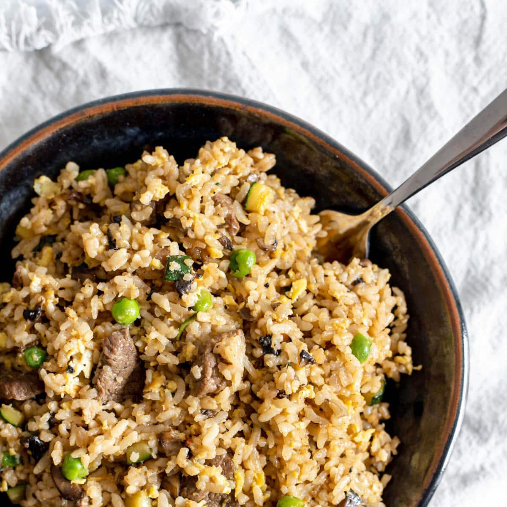

Home
Beef fried rice

Description
This was the first real meal I'd cooked for myself, and it was really good and made me happy because it tasted so good,
it was healthy, and I didn't have to spend $15 on takeout like I normally would :)
Its not that hard to make either! I like to sometimes switch the rice out for noodles to change it up
Ingredients
- 0.5 lbs of Ground beef
- Rice or noodles
- Sesame oil
- Soy sauce
- A quarter onion
- As much (or little) brocolli as you want!
Steps
- Start by chopping your onions, and parboiling the brocolli. You can also
boil the rice now, though I think its better with day old rice.
- Heat up your pan, and put the ground beef on. Make sure to constantly
break it up to avoid chunks
- Once the beef has cooked a bit (is turning mostly not pink), add the onions and some soy sauce
- You can add any other seasonings you want now, also
- Add the rice/noodles, making sure to spread it around and mix with the beef and onions
Add some more soy sauce if you want, it evaporates quick
- Add your sesame oil last, right before you dish it
Now you did it! You made yourself some beef fried rice/noodles~!